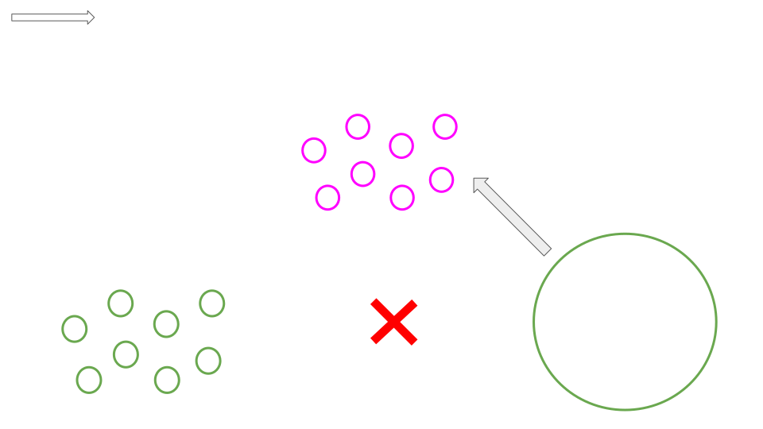
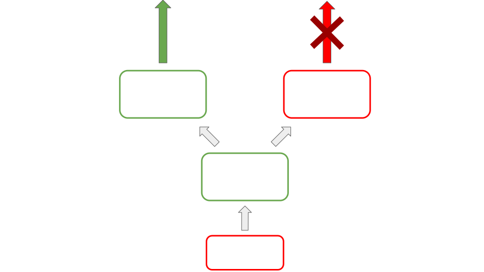
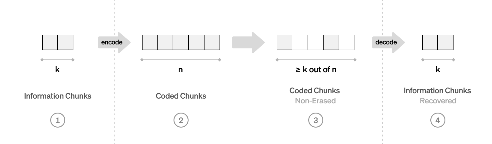
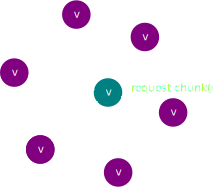
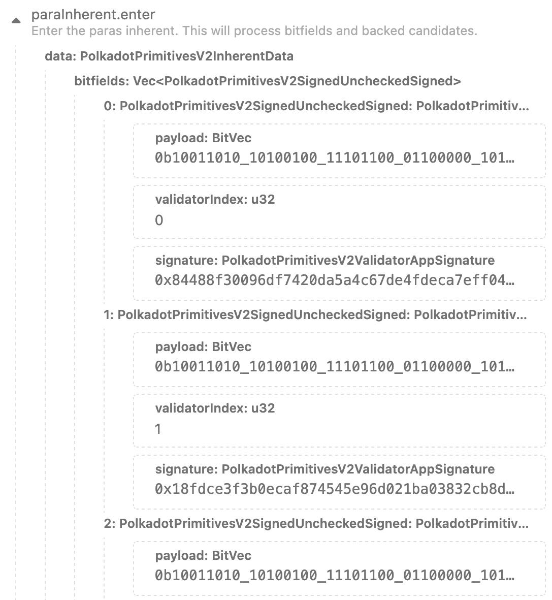
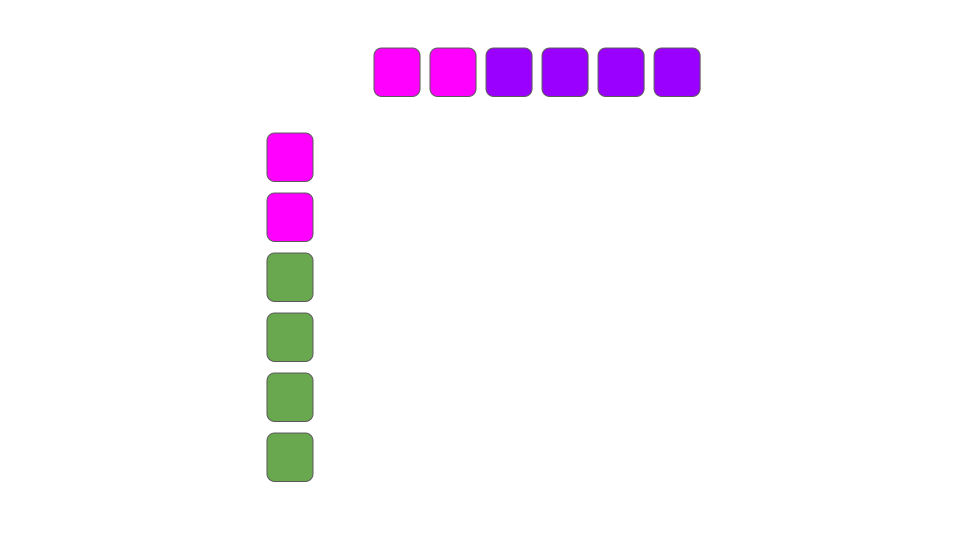
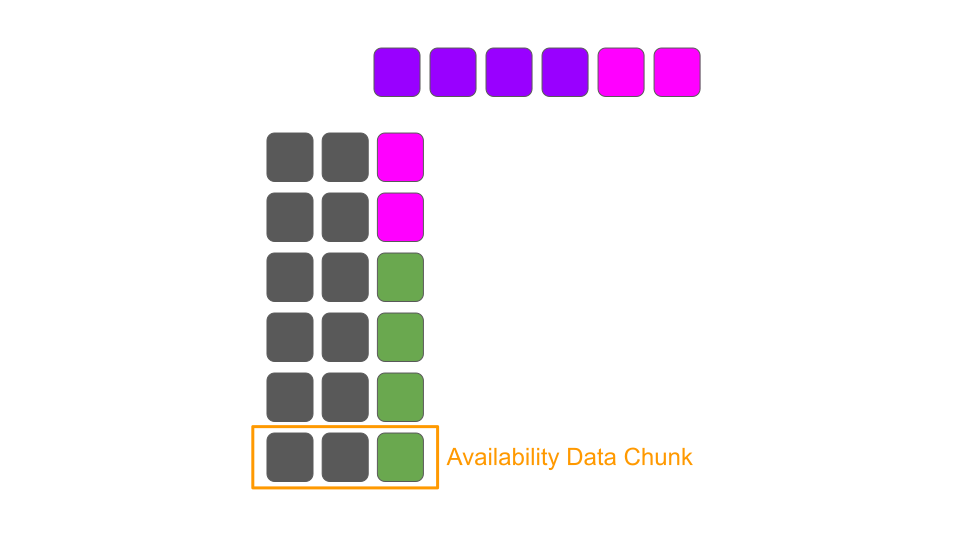

<!DOCTYPE html>
<html lang="en">

<head>
  <meta charset="utf-8" />
  <meta name="viewport" content="width=device-width, initial-scale=1.0, maximum-scale=1.0, user-scalable=no" />

  <title>Data Availability and Sharding</title>
  <link rel="icon" href="./../../../assets/favicon.svg" />
  <link rel="shortcut icon" href="./../../../assets/favicon.png" />
  <link rel="stylesheet" href="./../../../dist/reset.css" />
  <link rel="stylesheet" href="./../../../dist/reveal.css" />
  <link rel="stylesheet" href="./../../.././assets/styles/PBA-theme.css" id="theme" />
  <link rel="stylesheet" href="./../../../css/highlight/shades-of-purple.css" />

  <link rel="stylesheet" href="./../../.././assets/styles/custom-classes.css" />

</head>

<body class="site">
  <header class="site-header">
    <!-- This logo is a link only on the watching server, not the production build -->
    <a href="">
      
    </a>
  </header>
  <main class="reveal">
    <article class="slides">
      <section  data-markdown><script type="text/template">

# Data Availability and Sharding
</script></section><section  data-markdown><script type="text/template">
### Outline

<pba-flex center>

1. [Data Availability Problem](#what-data-needs-availability)
1. [Polkadot's Data Availability Solution](#polkadots-data-availability-solution)
1. [Erasure coding](#erasure-coding-revisited)
1. [Ongoing Work](#ongoing-work)
1. [References](#references)

</pba-flex>
</script></section><section  data-markdown><script type="text/template">
## What Data Needs Availability?

<pba-flex center>

Sharded Permanent Record: **Parachains!**

Condensed Permanent Record: **Relay Chain!**

Comprehensive 24 Hour Record: **Polkadot DA!**

</pba-flex>

<aside class="notes"><ul>
<li>Most data live solely on parachains</li>
<li>Condensed data, hashes and commitments, stored on relay chain</li>
<li>DA secures heavy (MBs) information critical to the secure progression of parachains. Should be dropped from validators when old.</li>
</ul>
</aside></script></section><section  data-markdown><script type="text/template">
## Data Availability Problem

How do we ensure a piece of data is retrievable without storing it on every single node forever (on-chain)?

Incorrectness can be proven (merkle proofs), but unavailability can't.

<aside class="notes"><ul>
<li>You can&#39;t just hold a small number of nodes accountable for making some data available</li>
<li>Needs an off chain solution!<ul>
<li>All other data added to relay chain per day: ~555M</li>
<li>40 PoVs per block for a day: ~72G</li>
</ul>
</li>
</ul>
</aside></script></section><section  data-markdown><script type="text/template">
### Data Availability Problem: Parachains

<div class="r-stack">


<!-- .element: class="fragment" data-fragment-index="1" -->
</div>

<aside class="notes"><p>Block producers withholding blocks can:</p>
<ul>
<li>Prevent nodes and users from learning the parachain state</li>
<li>Prevent other collators from being able to create blocks</li>
</ul>
<p>Solution:</p>
<ul>
<li>Validators keep enough info for collators to reconstruct recent parachain blocks</li>
</ul>
</aside></script></section><section  data-markdown><script type="text/template">
### Data Availability Problem: Relay Chain


<aside class="notes"><ul>
<li>Malicious backers could distribute invalid PoV to only malicious approval checkers</li>
<li>Really bad</li>
<li>It means attackers could consistently finalize invalid parachain blocks with just a hand full of dishonest approval checkers</li>
</ul>
</aside></script></section><section  data-markdown><script type="text/template">
### Data Availability Problem: Relay Chain



<aside class="notes"><ul>
<li>With honest DA layer, selective distribution isn&#39;t possible</li>
</ul>
</aside></script></section><section  data-markdown><script type="text/template">
## Polkadot's Data Availability Solution
</script></section><section  data-markdown><script type="text/template">
### Design Considerations

<pba-flex center>

1. Avoid storing full PoV in each validator
1. Avoid fragility, where misbehavior can compromise PoV retrieval
<!-- .element: class="fragment" data-fragment-index="1" -->
1. Need cryptographic scheme to prove availability before approvals start
<!-- .element: class="fragment" data-fragment-index="2" -->
1. Need a way to verify retrieved PoV integrity
<!-- .element: class="fragment" data-fragment-index="3" -->

</pba-flex>

<aside class="notes"><ul>
<li>Passing full PoV copies to a large fraction of validators would work, but we can do much better!</li>
<li>Misbehavior up to 1/3 should be accomodated to match threat model</li>
</ul>
</aside></script></section><section  data-markdown><script type="text/template">
### Laying the Foundation: Execution Cores

<pba-cols>
<pba-col center>

- Minimal unit of Polkadot execution scheduling
- At most 1 candidate pending availability per relay block, per core
<!-- .element: class="fragment" data-fragment-index="1" -->
- Considered "occupied" while a candidate paired with that core is pending availability
<!-- .element: class="fragment" data-fragment-index="2" -->
- It saves resources to bundle signals about availability for all cores together
<!-- .element: class="fragment" data-fragment-index="3" -->

</pba-col>
<pba-col center>


</pba-col>
</pba-cols>
</script></section><section  data-markdown><script type="text/template">
### Laying the Foundation: Erasure Coding

The goal: Avoid storing full PoV in each validator

<pba-flex center>

- Encode data of K chunks into a larger code word of N chunks
<!-- .element: class="fragment" data-fragment-index="1" -->
- Any K-subset of N chunks can be used to recover the data
<!-- .element: class="fragment" data-fragment-index="2" -->

</pba-flex>



<aside class="notes"><ul>
<li>Erasure coding allows storing only 3x PoV size vs 334x for 1000 validators</li>
</ul>
</aside></script></section><section  data-markdown><script type="text/template">
### In code

```rust
type Data = Vec<u8>;

pub struct Chunk {
	pub index: usize,
	pub bytes: Vec<u8>,
}

pub fn encode(_input: &Data) -> Vec<Chunk> {
	todo!()
}

pub fn reconstruct(_chunks: impl Iterator<Item = Chunk>) -> Result<Data, Error> {
	todo!()
}
```

<aside class="notes"><ul>
<li>Opaque data and chunks</li>
<li>encode: data -&gt; chunks</li>
<li>reconstruct: chunks -&gt; data</li>
</ul>
</aside></script></section><section  data-markdown><script type="text/template">
### Polkadot Data Availability Overview

<pba-flex center>

- Each PoV is divided into $N_{validator}$ chunks
- Validator with index i gets a chunk with the same index
<!-- .element: class="fragment" data-fragment-index="1" -->
- Validators sign statements when they receive their chunk
<!-- .element: class="fragment" data-fragment-index="2" -->
- Once we have $\frac{2}{3} + 1$ of signed statements,<br/>PoV is considered available
<!-- .element: class="fragment" data-fragment-index="3" -->
- Any subset of $\frac{1}{3} + 1$ of chunks can recover the data
<!-- .element: class="fragment" data-fragment-index="4" -->
- When PoV is later retrieved by approvers,<br/>chunk validity is verified using a merkle proof
<!-- .element: class="fragment" data-fragment-index="5" -->

</pba-flex>

<aside class="notes"><ul>
<li>PoV is K chunks from erasure coding slide</li>
<li>We store 3 K chunks, 3x PoV size among validators</li>
<li>We need 1/3 + 1 of those chunks to reassemble PoV</li>
</ul>
</aside></script></section><section  data-markdown><script type="text/template">
### Availability Distribution



<aside class="notes"><ul>
<li>Validator i sees backing statements on chain and requests chunk i for each PoV from its associated backer</li>
<li>Backers respond with chunks, or availability times out</li>
</ul>
</aside></script></section><section  data-markdown><script type="text/template">
### Availability Statement Format: Bitfields

One structure to sign them all!


<aside class="notes"><ul>
<li>Number of bits equivalent to the number of <code>AvailabilityCore</code>s</li>
<li>Bit <code>i</code> represents one validator&#39;s report as to whether it has its chunk of the PoV occupying core <code>i</code></li>
<li>Condenses a validator&#39;s perspective into a minimal structure to be signed and gossiped</li>
<li>Submitted on-chain by block producers</li>
</ul>
</aside></script></section><section  data-markdown><script type="text/template">
### Availability On-Chain



<aside class="notes"><ul>
<li>These statements are gossiped off-chain and included in a block in a ParachainsInherent.</li>
<li>Why do we need bitfields on-chain?</li>
</ul>
</aside></script></section><section  data-markdown><script type="text/template">
### Availability Thresholds Visualized



<aside class="notes"><ul>
<li>Validator Y is producing a block</li>
<li>Statements from validators a, f, g, and b determine availability for blocks occupying 5 cores</li>
<li>Candidates 0, 3, and 4 are marked as included. Approvals start. Cores are freed to repeat process.</li>
</ul>
<p>What is wrong with this diagram?</p>
</aside></script></section><section  data-markdown><script type="text/template">
### PoV Chunk Validation

What happens if there's a bad chunk in the reconstructed PoV?

Solution: Merkle proofs!

<!-- .element: class="fragment" data-fragment-index="1" -->

<pba-flex center>

- PoV chunks form branches of a merkle tree
<!-- .element: class="fragment" data-fragment-index="2" -->
- Proof distributed with each chunk
<!-- .element: class="fragment" data-fragment-index="3" -->
- Chunks checked against erasure_root from CandidateReceipt
<!-- .element: class="fragment" data-fragment-index="4" -->

</pba-flex>

<aside class="notes"><ul>
<li>Corrupted PoV -&gt; PVF failure not attributable to backers</li>
<li>Can lead to punishment of innocent parties in disputes</li>
</ul>
</aside></script></section><section  data-markdown><script type="text/template">
## Erasure Coding Revisited

<pba-flex center>

- Encode data of K chunks into a larger code word of N chunks
- Any K-subset of N chunks can be used to recover the data
<!-- .element: class="fragment" data-fragment-index="1" -->

</pba-flex>


<br>

EX: Lagrange Interpolation

<!-- .element: class="fragment" data-fragment-index="2" -->

<aside class="notes"><ul>
<li>Polkadot uses: Fast fourier transform (FFT) based Reed-Solomon algorithm (<a href="https://github.com/paritytech/reed-solomon-novelpoly">https://github.com/paritytech/reed-solomon-novelpoly</a>)</li>
<li>Better visually intuitive example: Lagrange interpolation</li>
</ul>
</aside></script></section><section  data-markdown><script type="text/template">
### Lagrange Interpolating Polynomial

For any number $n$ of points $(x_i,y_i)$ there exists only one polynomial of degree $n-1$ such that $p(x_i) = y_i$ for all $i$


<aside class="notes"><p>Question: What are x_i and y_i wrt to our data?</p>
</aside></script></section><section  data-markdown><script type="text/template">
### Interpolation for Data Recovery


<aside class="notes"><ul>
<li>We want that polynomial of degree n-1</li>
<li>We can obtain it using any n</li>
</ul>
</aside></script></section><section  data-markdown><script type="text/template">
### Summary: Reed-Solomon with Lagrange interpolation

1. Divide the data into chunks of size $P$ bits.
1. Interpret the chunks as (big) numbers $\mod P$.
1. Index of each chunk is $x_i$ and the chunk itself is $y_i$.
1. Construct the interpolating polynomial $p(x)$ and evaluate it at additional $n - k$ points.
1. The encoding is $(y_0, ..., y_{k-1}, p(k), ... p(n - 1))$ along with indices.

<aside class="notes"><p>How do we do reconstruction?</p>
</aside></script></section><section  data-markdown><script type="text/template">
### Final Twist, Multiple Code Words



<aside class="notes"><ul>
<li>Previously described Reed Solomon as if we are encoding the PoV into a single code word</li>
<li>Size limitations per code word -&gt; many code words</li>
<li>Each code word encodes a small subset of the original data</li>
</ul>
</aside></script></section><section  data-markdown><script type="text/template">
### Final Twist, Multiple Code Words


<aside class="notes"><ul>
<li>Previously described Reed Solomon as if we are encoding the PoV into a single code word</li>
<li>Size limitations per code word -&gt; many code words</li>
<li>Each code word encodes a small subset of the original data</li>
</ul>
</aside></script></section><section  data-markdown><script type="text/template">
### Final Twist, Multiple Code Words



<aside class="notes"><ul>
<li>Chunk i is actually composed of smaller chunks i for each code word in a PoV</li>
<li>If we can reassemble the data from any one code word, then we can reassemble all of them</li>
</ul>
</aside></script></section><section  data-markdown><script type="text/template">
### Ongoing Work

Reed Solomon is costly, taking 14-20% of validator CPU time.

**Obvious target for optimization!**

<!-- .element: class="fragment" data-fragment-index="1" -->

<pba-flex center>

- Systemic chunks recovery
  <!-- .element: class="fragment" data-fragment-index="2" -->
      - Removes need for decoding
  <!-- .element: class="fragment" data-fragment-index="2" -->
      - Instead, re-encode to check chunk validity
  <!-- .element: class="fragment" data-fragment-index="2" -->
      - ~50% CPU time improvement
  <!-- .element: class="fragment" data-fragment-index="2" -->
- Compiler elision of array bounds checks + inlining
  <!-- .element: class="fragment" data-fragment-index="3" -->
      - ~33-50% CPU time improvement depending on unsafe Rust use
  <!-- .element: class="fragment" data-fragment-index="3" -->
- Better implemented Reed Solomon library (potential 10x improvement!)
<!-- .element: class="fragment" data-fragment-index="4" -->

</pba-flex>

<aside class="notes"><p>Systemic chunks recovery RFC: <a href="https://github.com/alindima/RFCs/blob/av-chunk-indices/text/0047-assignment-of-availability-chunks.md">https://github.com/alindima/RFCs/blob/av-chunk-indices/text/0047-assignment-of-availability-chunks.md</a></p>
<p>Better implemented Reed Solomon: <a href="https://github.com/paritytech/reed-solomon-novelpoly/issues/40">https://github.com/paritytech/reed-solomon-novelpoly/issues/40</a></p>
</aside></script></section><section  data-markdown><script type="text/template">
<!-- .slide: data-background-color="#4A2439" -->

# Questions
</script></section><section  data-markdown><script type="text/template">
## References

1. https://www.youtube.com/watch?v=1pQJkt7-R4Q
1. https://github.com/alindima/RFCs/blob/av-chunk-indices/text/0047-assignment-of-availability-chunks.md
</script></section>
    </article>
  </main>

  <script src="./../../../dist/reveal.js"></script>

  <script src="./../../../plugin/markdown/markdown.js"></script>
  <script src="./../../../plugin/highlight/highlight.js"></script>
  <script src="./../../../plugin/zoom/zoom.js"></script>
  <script src="./../../../plugin/notes/notes.js"></script>
  <script src="./../../../plugin/math/math.js"></script>

  <script src="./../../../assets/plugin/mermaid.js"></script>
  <script src="./../../../assets/plugin/mermaid-theme.js"></script>

  <script src="./../../../assets/plugin/chart/chart.js"></script>
  <script src="./../../../assets/plugin/chart/chart.min.js"></script>

  <script src="./../../../assets/plugin/tailwindcss.min.js"></script>

  <script>
    function extend() {
      var target = {};
      for (var i = 0; i < arguments.length; i++) {
        var source = arguments[i];
        for (var key in source) {
          if (source.hasOwnProperty(key)) {
            target[key] = source[key];
          }
        }
      }
      return target;
    }

    // default options to init reveal.js
    var defaultOptions = {
      controls: true,
      progress: true,
      history: true,
      center: true,
      transition: 'default', // none/fade/slide/convex/concave/zoom
      slideNumber: true,
      mermaid: {
        startOnLoad: false,
        logLevel: 3,
        theme: 'base',
        themeVariables: {
          primaryColor: purple,
          primaryTextColor: white,
          primaryBorderColor: pink,
          lineColor: pink,
          secondaryColor: lightPurple,
          tertiaryColor: lightPurple,
        },
      },
      chart: {
        defaults: {
          color: 'lightgray', // color of labels
          scale: {
            beginAtZero: true,
            ticks: { stepSize: 1 },
            grid: { color: "lightgray" }, // color of grid lines
          },
        },
        line: { borderColor: ["#ccc", "#E6007A", "#6D3AEE"], "borderDash": [[5, 10], [0, 0]] },
        bar: { backgroundColor: ["#ccc", "#E6007A", "#6D3AEE"] },
      },
      plugins: [
        RevealMarkdown,
        RevealHighlight,
        RevealZoom,
        RevealNotes,
        RevealMath,
        RevealMermaid,
        RevealChart
      ]
    };

    // options from URL query string
    var queryOptions = Reveal().getQueryHash() || {};

    var options = extend(defaultOptions, {"width":1400,"height":900,"margin":0,"minScale":0.2,"maxScale":2,"transition":"none","controls":true,"progress":true,"center":true,"slideNumber":true,"backgroundTransition":"fade"}, queryOptions);
  </script>


  <script>
    Reveal.initialize(options);
  </script>
</body>

</html>
